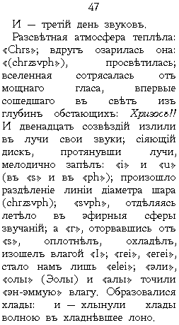

Glossolalia (Section 47)
GLOSSOLALIA

And -- the third day of sounds.
The dawning atmosphere was warming up: "Chrs"; suddenly it lit up like the dawn: ("chrzsvph"); it illuminated; the universe trembled from the mighty voice, which had first come to the light from the surrounding depths: Chrysos!! And twelve constellations poured out their sounds into rays; a shining disk, extending its rays, sang out melodiously: "i" and "u" (in "s" and in "ph"); there came to pass the separation of the line of the sphere's diameter (chrzsvph); "svph," separating itself flew into the etheral spheres of sounds; but "r", having torn itself away from "s," condensed, cooled off/congealed, emerged from the moist "I"; "rei", "erei," became for us just "elei"; "eli, " "oli" (Aeoli) and "ali" refined the "n-m" moistness. Coldies [cold layers] were formed: and -- these coldies gushed in a wave into the lap grown cold.